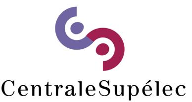
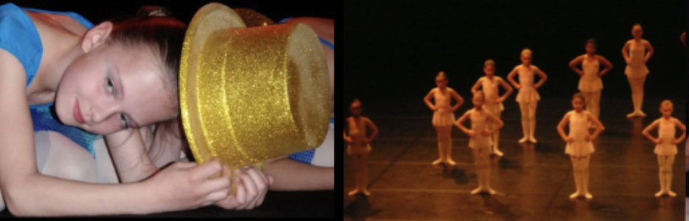

Hello! I'm Julia Schaff, a Master student in General Management & Strategy Consulting at IESEG and doing a doble degree at Centrale Supélec in Innovation & Transformation.
I'm enrolled at IESEG in the Programme Grande Ecole (PGE) for 5 years. My academic background in business school and my various professional experiences have forged my skills in a variety of fields. I have started Centrale Supélec in September and I am working at Pernod Ricard now
I'm fluent in several languages, including French, English, Spanish, Dutch, and Chinese.
My passion for ballet has accompanied me for 11 years, underlining my discipline and perseverance. At the same time, I have a passion for travel, a sign of my open-mindedness and curiosity about new cultures.
In the following pages, you'll discover my professional experience and my university exchange. I was lucky enough to go to Santiago in Chile, where I had the time to travel a lot, and that's what I'm highlighting on the last page :)
See you soon